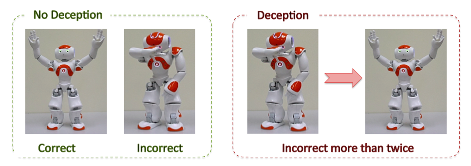
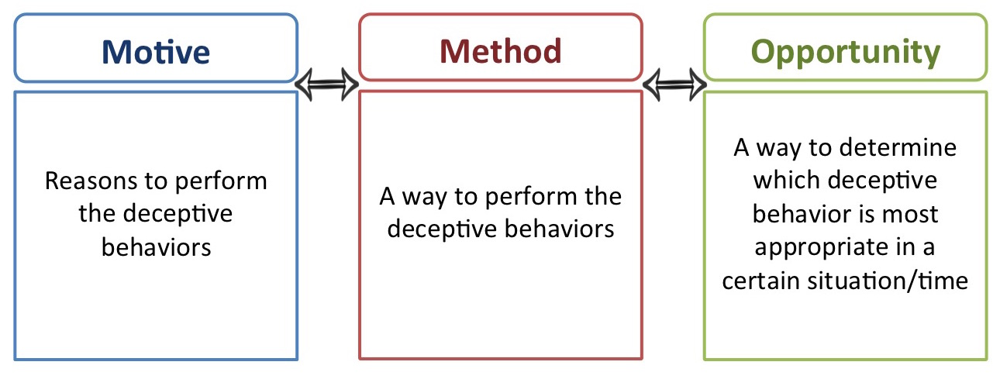
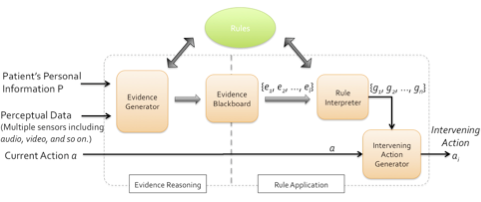
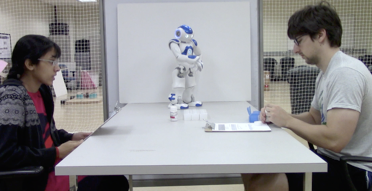
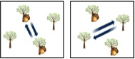
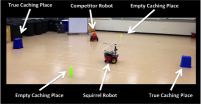

Jaeeun Shim's research interests: Robotics, Human-Robot Interaction, Robot Deception, Human-Computer Interaction, and many others...
- Robot Deception in HRI
- Intervening Ethical Governor
- Bio-inspired Robot Deception
- Learning by Demonstration
- Data Visualization and Analytics
Robot Deception in HRI
As social agents, people commonly lie to others and perform deceptive behaviors more than they realize. In human interaction, deception is ubiquitous and occurs frequently during people’s development and in personal relationships, sports, culture, and even war. Then, are humans the only beings to have deception capabilities? No, deception is not limited to human beings. Various biological research findings illustrate that animals act deceptively in several ways to enhance their chance of survival. One article finds that even some plants show deception for the purpose of survival. From these findings, we can argue that deception is a general and essential behavior for any species, which raises an interesting question: can deception be an essential characteristic for robots, especially social robots?
Throughout the work in my dissertation, I aim to investigate and explore deception in social robots. In other words, I aim to figure out whether and how a robot decides and performs deception in general social situations. Even though we can discuss the potential benefits of robot deception, it is obvious that robot deception has to be considered carefully in regards to social robots. One strong argument that I will illustrate throughout this research is that robot deception should be used only in appropriate human-robot interaction (HRI) contexts. I will discuss the motivation of robot deception later, but briefly, a chief motive for social robots to perform deception should be to benefit the deceived human beings. According to DePaulo, human deception can be categorized based on motivation, such as self-oriented and other-oriented deception. In general, people act deceptively for their (deceiver’s) own benefit. This is self-oriented deception. However, people also sometimes deceive another person for that person’s (the deceived’s) benefit. For example, people may tell a white lie such as “you look great today!” just to make the deceived person feel good. This type of deception is defined as other-oriented deception, which is motivated by the deceived person’s potential benefits. Similar to this approch, I classify robot deception (also define the taxonomy of robot deception) and define other-oriented robot deception. Also, I aim to achieve this other-oriented robot deception in HRI.
To argue a robot's other-oriented deception, I developed a computational model for robot deception inspired by criminological law. According to this approach, deception can be analyzed by three criteria: methods, motives, and opportunities. Methods indicate the way to perform deception, where a novel algorithm for generating deceptive actions is developed. Motives indicate whether the current situation warrants the use of other-oriented deception. If so, the robot should determine specifically when the deceptive actions should be performed given an Opportunity. First, the deceptive action generation model for the method part is developed inspired by Bell and Whaley's deception mechanisms in psychology: deception by omission and deception by commission. In opportunities and motives parts, an appropriate action should be selected from a set of true/deceptive actions for a given situation. The model should store the information of situation-action pairs that increases/decreases the deceived human's benefits. For this purpose, a computational model is developed via Case-based Reasoning mechanism.

After, by conducting HRI study, I explored the real usecases of other-oriented robot deception. It is essential to determine whether the specific context warrants the use of other-oriented deception. Once we can identify the use of deception that can help the deceived human in a certain situation, a robot establishes the motive(s) for other-oriented deception, and subsequently may perform deceptive behaviors. In the HRI study, we explore the potential context in which the motives of otheroriented deception can be revealed. To demonstrate the benefit of other-oriented robot deception, we conduct a formal HRI study and identify its advantages.
Publications
- Jaeeun Shim.and Ronald C. Arkin, 2016. "Other-oriented Robot Deception: How can a robot’s deceptive feedback help humans in HRI?", Eighth International Conference on Social Robotics (ICSR 2016), Kansas, Mo., Nov. 2016. [pdf]
- Jaeeun Shim and Ronald C. Arkin, "The Benefits of Robot Deception in Search and Rescue: Computational Approach for Deceptive Action Selection via Case-based Reasoning," 2015 IEEE International Symposium on Safety, Security, and Rescue Robotics (SSRR 2015), West Lafayette, IN, Oct. 2015. [pdf]
- Jaeeun Shim and Ronald C. Arkin. "Other-Oriented Robot Deception: A Computational Approach for Deceptive Action Generation to Benefit the Mark," 2014 IEEE International Conference on Robotics and Biomimetics (ROBIO 2014), Bali, Indonesia, Dec. 2014. [pdf]
- Jaeeun Shim and Ronald C. Arkin. "A Taxonomy of Robot Deception and its Benefits in HRI," Proc. IEEE Systems, Man, and Cybernetics Conference (SMC), Manchester, England, 2013. [pdf]
Intervening Ethical Governor
Today, more than 10 million people suffer from Parkinson’s disease (PD) worldwide and around 1 million Americans have been diagnosed with PD. Robotic technologies have been developed and are used to help PD patients and caregivers. However, most technologies to date are focused on the benefits related to PD patients’ physical rehabilitation. For example, by using robotic training, PD patients can prevent or delay their loss of motor control.
Distinct from previous research, we focus on the role of robots in improving the quality of people’s interactions and relationships with each other. For example, therapeutic robots are widely used to help children with autism in their social development. We aim to improve the quality of PD patients’ everyday life and their relationship with their caregivers by using robotic technologies.
When interacting with caregivers, patients with PD experience challenges due to declining control over their musculature. In particular, since patients experience the loss of control of their facial muscles, they frequently cannot express their emotions or nuances in their faces. As a result, PD patients often can have blank expressions when they are interacting with other people (facial masking). Facial expression is one of the essential cues in conveying people’s emotions and feelings in human-to-human communication. Therefore, PD patients’ facial masking can cause caregivers to misunderstand patients during their interactions. For this reason, the quality of PD patients and caregivers’ relationships can worsen, and as a result, stigmatization between a caregiver and a patient can arise.
To assist in remedying this problem, a robot mediator can be used to assist in the relationship between PD patients and their caregivers. In this five-year, NSF-funded study (a collaborative interdisciplinary effort with Tufts University), we develop a robot mediator that can reduce the communication gap and uphold the dignity of early-stage PD patients that exhibit expressive masks during stigmatizing interactions with their caregivers.
The robot mediator’s architecture consists of two new components, which are the ethical adaptor and the intervening ethical governor. The ethical adaptor models the relationship between the patient and caregiver and uses this model to recognize stigmatization by recognizing discordance between their moral emotional states. An ethical adaptor model has been proposed and developed in our lab and has been presented elsewhere. In particular, indignity arises when a patient experiences shame or embarrassment but the caregiver cannot respond with a sufficient level of empathy. In the ethical adaptor model, a robot mediator detects these gaps between the patient’s shame and the caregiver’s empathy and generates an appropriate robot action using kinesic nonverbal cues.
The second part of the robot mediator’s architecture is the intervening ethical governor (IEG), which can be used in more extreme situations. Stigmatization is highly related to ethical issues, and the maintenance of dignity is essential in our development of a robot mediator. For this purpose, we developed the IEG model that enables a robot to observe whether patients or caregivers crossed accepted ethical boundaries. When any one of a set of ethical rules is broken, the robotic intermediary intervenes with both nonverbal and verbal responses in an effort to restore a normal patient-caregiver relationship. The model for the IEG and its architecture were presented in earlier research that enables a robot to ethically intervene.
IEG is a component of a robot architecture that enables a robot to determine how and when to intervene if unacceptable human-to-human interaction boundaries are crossed. As illustrated in Figure 1, perceptual data and previous case knowledge about the patient and the caregiver are encoded and then recalled by the evidence reasoning model. By sharing this information with the rule application module, it is determined whether any of the rules encoding the acceptable social norms have been broken. Once any rule violations have been triggered, the intervening ethical governor generates the appropriate corresponding intervention action, so the robot mediator can promptly intervene in the patient-caregiver relationship. In this paper, we present the implementation details, based on the previous IEG model. By applying this model to a humanoid robot, we simulate multiple intervention situations and confirm the application of the interventions at the right time and in the right manner. As an evaluation method, we recorded intervention interactions and ran a formal interview study, where we presented the simulation videos to our target population (people who are aged 60 years or older) and asked questions with respect to the robots actions and the appropriateness of its responses. Based on the interview results, we evaluated the IEG model and obtained feedback on how to improve the current intervention rules and behaviors for further trials.
Publications
- Jaeeun Shim, Ronald C. Arkin and Michael Pettinati, 2017. "An Intervening Ethical Governor for a robot mediator in patient-caregiver relationship: Implementation and Evaluation'', Proc. ICRA 2017, Singapore, May 2017.[pdf]
- Jaeeun Shim and Ronald C. Arkin, "An Intervening Ethical Governor for a Robot Mediator in Patient-Caregiver Relationships", International Conference on Robot Ethics (ICRE 2015), Lisbon, PT, Oct. 2015.[pdf]
Bio-inspired Robot Deception
The patrolling strategy used by Eastern Grey Squirrels is one interesting example in nature regarding the possible role of deception, where they use deception to protect their food caches from other predators. After hoarding food items, squirrels begin to protect their resources from pilfering by patrolling the caches. As the patrolling strategy, squirrels first move around the caching areas and check whether the cached food items are safe. It was observed, however, that when a predator is present, the squirrel changes its patrolling behavior to spend time visiting empty cache sites, with the apparent intent to mislead the raider into the belief that those sources are where the valuables are located, a diversionary tactic of sorts.
Inspired by these deceptive behaviors of squirrels, a bio-inspired behavior-based model of squirrel caching and protecting behaviors for application to robotic systems is developed and implemented in MissionLab, a mission specification software package developed by the Mobile Robotics laboratory at Georgia Tech. MissionLab pro- vides a graphical user interface that enables users to easily specify behavioral states and the control transitions between states, yielding a finite state acceptor (FSA), which can then be compiled down to executable code for both simulations and robots [94]. Each behavior component is an assemblage, a coordinated aggregation of primitive behaviors. The new caching and patrolling behaviors created are combined with pre-existing behaviors, such as avoiding obstacles, moving toward an object, or injecting randomness (noise). Simulation studies and real robot experiments were also performed to validate the algorithm.
This is a form of misdirection, where communication is done implicitly through a behavioral change by the deceiver. I implemented this strategy in simulation, and showed that these deceptive behaviors worked effectively, enabling robots to perform better using deception than without with respect to delaying the time of the discovery of the cache. I also performed the real robot experiment evaluated using the experimental layout using two Pioneer robots and external camera sensors.
This research has been covered by Discovery, IEEE Spectrum, Wired UK, Tech Hive, Engadget, Science World Report, Huffington Post UK, Popular Science, and a number of other media outlets.
Publications
- Jaeeun Shim and Ronald C. Arkin. "Biologically-Inspired Deceptive Behaviors for a Robot," 12th International Conference on Adaptive Behaviour, 2012, pp. 401-411. [pdf]
Learning by Demonstration
Robots learning interactively with a human partner has several open questions, one of which is increasing the efficiency of learning. One approach to this problem in the Reinforcement Learning domain is to use options, temporally extended actions, instead of primitive actions. In this paper, we aim to develop a robot system that can discriminate meaningful options from observations of human use of low-level primitive actions. Our approach is inspired by psychological findings about human action parsing, which posits that we attend to low-level statistical regularities to determine action boundary choices. We implement a human-like action segmentation system for automatic option discovery and evaluate our approach and show that option-based learning converges to the optimal solutions faster compared with primitive-action-based learning.
In this work we show that robots can find options automatically from human-like action segmentation, and that these options enable them to more efficiently learn from demonstration. Our approach is as follows:
- Human-like Action Segmentation: We solve the option discovery problem inspired by human statistical learning from low-level primitive actions. The assumption is that it will be easier to predefine a low-level primitive action set than highlevel actions or possible action sequences.
- Efficiency of the Learned Options: Given the set of options learned in the previous step, we evaluate their effectiveness in speeding up the learning process. We show these options provide efficiency gains with respect to learning an optimal policy with just primitive actions. We also show that our option discovery method shows better performance than a state-of-theart option discovery approach.
Publications
- Jaeeun Shim and Andrea L. Thomaz. "Human-Like Action Segmentation for Option Learning," 20th IEEE International Symposium on Robot and Human Interactive Communication (RO-MAN), 2011, pp. 455-460.
- Baris Akgun, Kaushik Subramanian, Jaeeun Shim, and Andrea Lockerd Thomaz. "Learning Tasks and Skills Together From a Human Teacher," Association for the Advancement of Artificial Intelligence (AAAI), 2011.
- Aaron Curtis, Jaeeun Shim, Eugene Gargas, Adhityan Srinivasan, and Ayanna M. Howard. "Dance dance Pleo: developing a low-cost learning robotic dance therapy aid," International Conference on Interaction Design and Children (IDC), 2011,149-152.
Data Visualization and Analytics
Publications
- Hanseung Lee, Jaegul Choo, Carsten Gorg, Jaeeun Shim, Jaeyeon Kihm, Zhicheng Liu, Jaeeun Shim, Haesun Park, and John Stasko. "GeneTracer: Gene Sequence Analysis of Disease Mutations," IEEE Conference on Visual Analytics Science and Technology (VAST), 2010, Received an award for an Excellent Process Explanation in VAST Challenge.
- Jee Yeon Hwang, Jaeeun Shim, and Heerin Lee. "Designing a Visual Analytic System to Represent Bookmark Sharing Data," Visual Representations and Reasoning, Papers from the 2010 AAAI(Association for the Advancement of Arti cial Intelligence) Workshop, 2010.